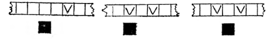
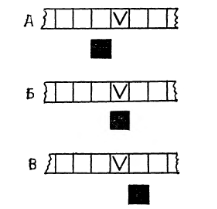

1.4 Примеры выполнения программ
Зададим, например,
начальное состояние, указанное на рис. 8, в следующую программу:
Посмотрим, как
будет работать машина при таком начальном состоянии и такой программе. На первом
шаге будет выполняться команда № 1. После первого шага состояние машины станет
таким,

Рис. 8 Рис. 9 Рис. 10
как указано на рис. 9. После
выполнения команды 3* 1 надо перейти к выполнению той команды, номер которой
совпадает с отсылкой команды Кд 1, т. е. к выполнению команды № 4. Эта команда
будет выполняться в течение второго шага, н состояние машины станет таким, как
на рис. 10. Теперь надо выполнить команду № 5 (ибо отсылка команды № 4 равна 5).
Эта команда будет выполняться на третьем шаге, в результате которого состояние
машины не изменится и останется таким, как на рис. 10. Поскольку обозреваемая
секция при этом пуста, то следующей должна выполняться команда, номер которой
равен верхней отсылке, т. е. числу 4. После выполнения на четвертом шаге команды
№ 4 машина придет в состояние, указанное на рис. 11. Теперь, на пятом шаге,
будет выполняться команда № 5. На этот раз обозреваемая секция отмечена, поэтому
следующей будет выполняться команда с номером, равным нижней отсылке, т. е.
числу 3. После выполнения на шестом шаге
Рис. 11 Рис. 12 Рис. 13
команды № 3 машина
придет в состояние, показанное на рис. 12, и приступит на седьмом шаге к
выполнению команды № 2. Однако команда № 2 окажется невыполнимой, поскольку
предписывает стереть метку в пустой секции. Следовательно, на седьмом шаге
произойдет безрезультатная остановка. Различные программы, примененные к одному
и тому же начальному состоянию, могут приводить к различным исходам:
безрезультатной остановке, результативной остановке, безостановочной работе
машины. действительно, зададимся, например, начальным состоянием, указанным на
рис. 10. Применим к этому начальному состоянию программу
Машина сделает два
шага, а на третьем шаге произойдет безрезультатная остановка. Применим к этому
начальному состоянию программу
Машина сделает два
шага, а затем на третьем произойдет результативная остановка. Применим, наконец,
к этому же начальному состоянию
Машина будет
работать бесконечно. Применим теперь программу
Машина опять-таки
будет работать бесконечно (несмотря на то, что ни запись на ленте, ни положение
каретки не будут при этом меняться). Точно так же различные варианты может
давать и одна и та же программа, примененная к
различным

Рис. 14
начальным
состояниям. Рассмотрим, например, следующую программу:
Применим ее к
начальным состояниям А, Б, В, показанным на рис. 14. Для начального состояния А
получаем результативную остановку на четвертом шаге, для Б - бесконечную работу
машины, для В — безрезультатную остановку на третьем шаге. Применение к тем же
начальным состояниям программы
дает
безрезультатную остановку для А, результативную остановку для Б и бесконечную
работу машины для В.